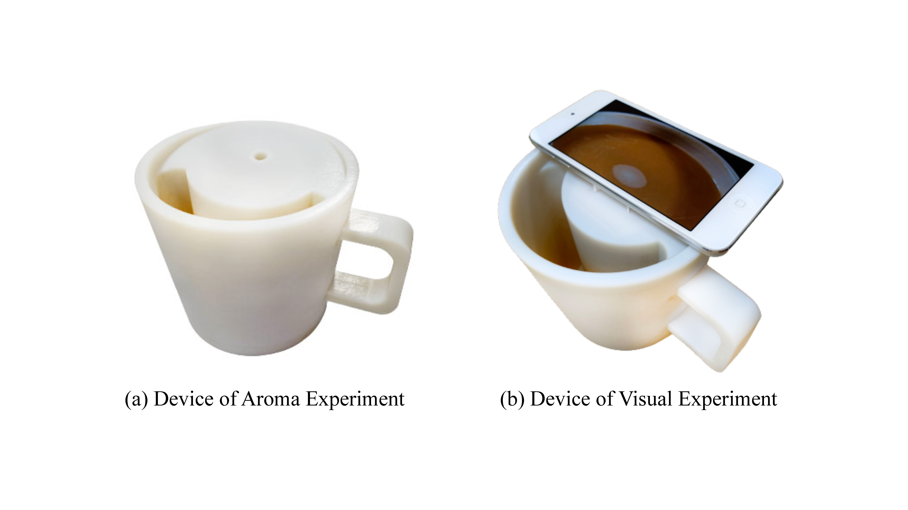
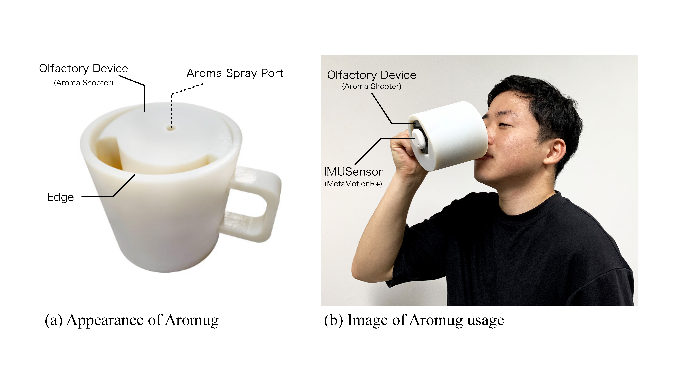
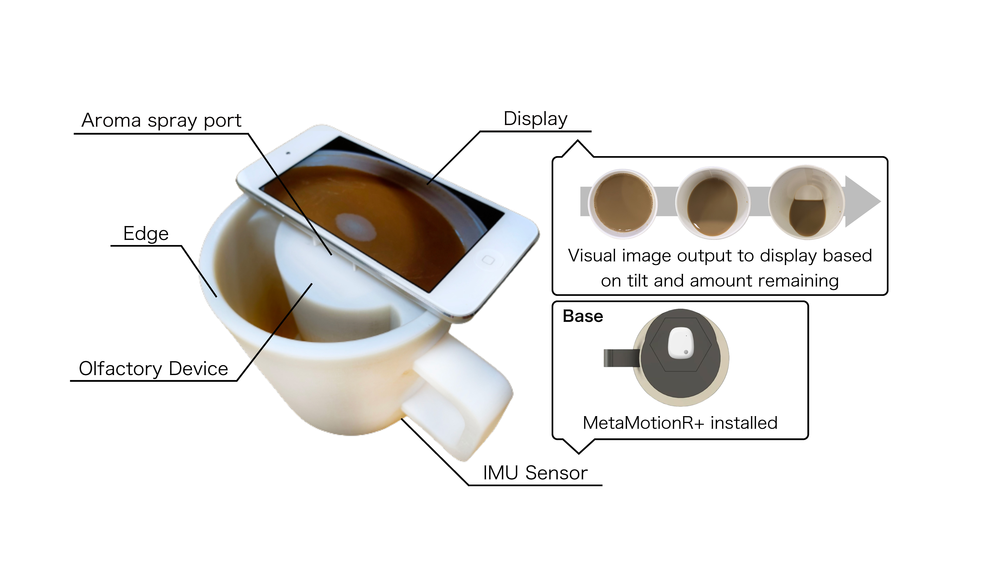
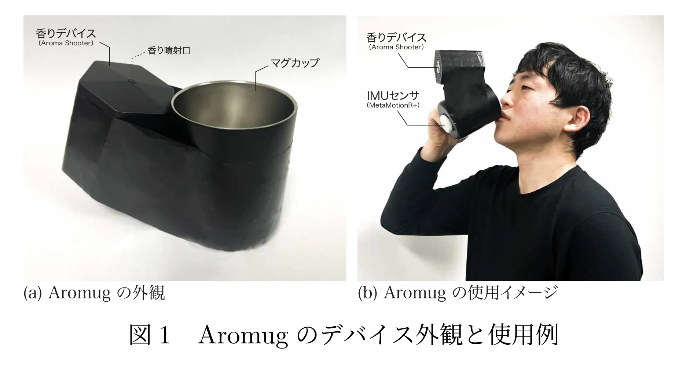
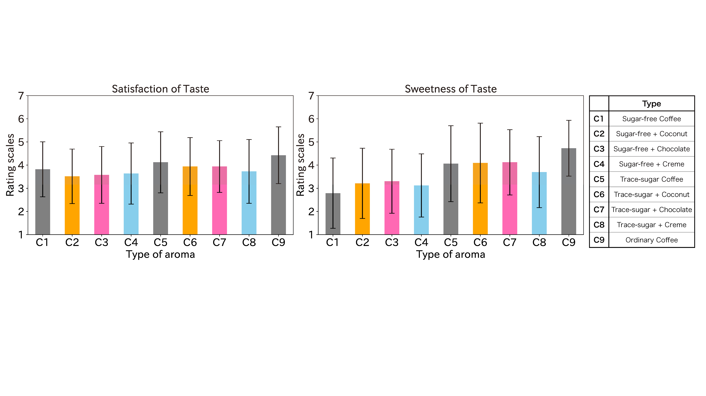
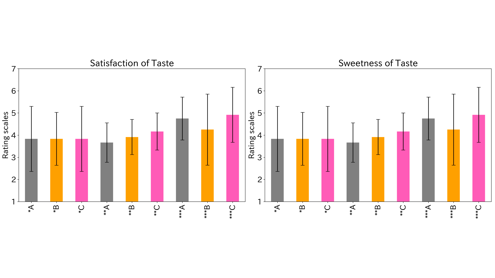
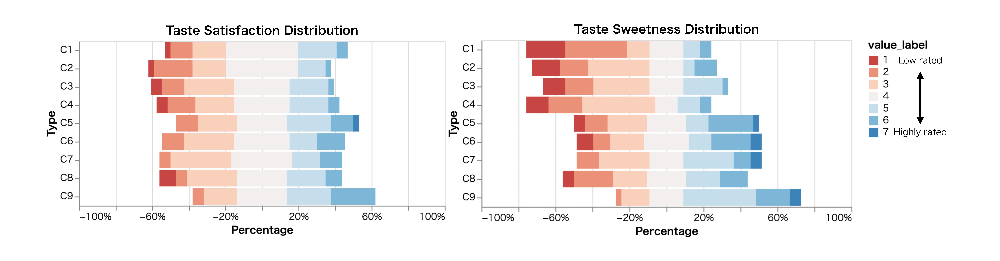

Aromug
Human-Computer Interaction / Human-Food Interaction / Olfactory Interface
Sugary beverages are a significant contributor to sugar consumption, and their excessive consumption is associated with increased risks of elevated blood glucose levels and diabetes. Many individuals have a strong preference for sugary beverages and often find beverages with lower sugar content to be less satisfying. Attempts to switch to less sugary options are frequently short-lived, leading to a return to higher-sugar beverages. Recognizing that 75 - 95% of taste perception is influenced by scent, we investigated a scent-based approach to reduce sugar intake while preserving the perception of sweetness. This study introduces an olfactory interface in the form of a mug named "Aromug, designed to emit a sweet scent in sync with the drinking action. Aromug incorporates motion sensing and scent presentation functions to enhance the perceived sweetness of a beverage, thereby encouraging a gradual reduction in sugar intake. Our experiments, involving 33 participants, demonstrated that the combined scents of sugar-free coffee and chocolate increased the perception of sweetness (p = 0.01641). The study also found that the simultaneous presentation of scent and visual cues improved taste satisfaction and sweetness perception. Additionally, we observed variations in sweetness preference related to age and frequency of coffee consumption. It was particularly observed that people in their 20s and those who frequently drink coffee tend to perceive the taste of beverages as sweeter. This suggests a potential for Aromug to customize the scent experience based on individual preferences, offering a novel way to encourage healthier beverage choices.








- Aromug: a Mug-type Olfactory Interface to Enhance the Sweetness Perception of Beverages
- Aromug: Mug-type Olfactory Interface to Assist in Reducing Sugar Intake Best Paper Award
- Aromug: 糖分摂取量低減を補助するスマートマグカップの設計と基礎評価 最優秀論文賞最優秀プレゼンテーション賞
- Aromug：糖分摂取量低減を補助するスマートマグカップの検討 実用化期待賞